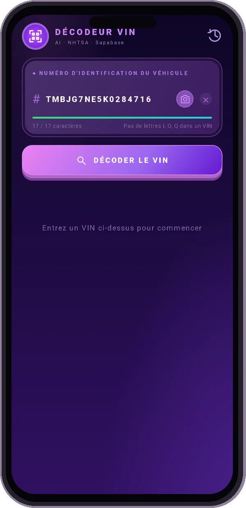
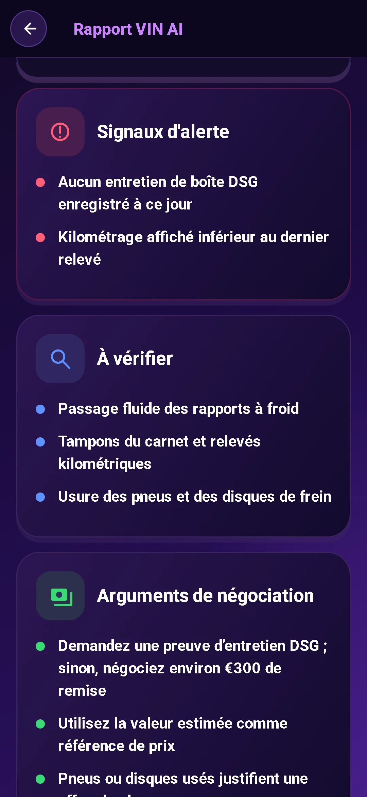
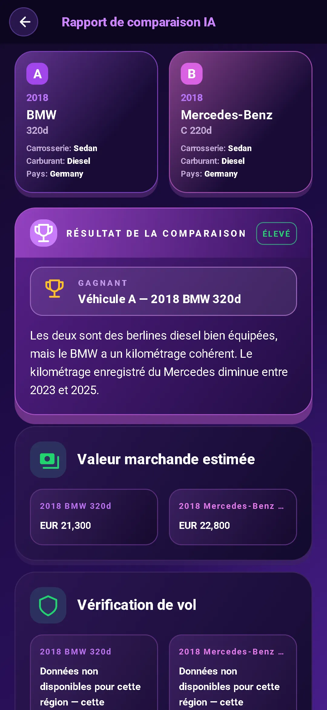

Scannez le VIN
Pointez votre appareil photo vers le VIN ou saisissez-le. Commencez par une vérification gratuite du VIN des spécifications de base du véhicule.
Cette voiture d'occasion a une histoire. Commencez par son VIN.
Obtenez les spécifications, repérez les signaux d’alarme et entrez dans la conversation préparé.
Aperçu du rapport verrouillé. Les données disponibles varient selon le véhicule et la source.
Télécharger sur Google PlayDécodage VIN gratuit. Rapport complet sur l'IA $3.99. Pas d'abonnement.

Allez au-delà d’une recherche VIN. Transformez les détails en questions qui méritent d'être posées.
Pointez votre appareil photo vers le VIN ou saisissez-le. Commencez par une vérification gratuite du VIN des spécifications de base du véhicule.
Découvrez le moteur, la finition, la transmission aux roues et bien plus. Consultez les rappels, les plaintes des propriétaires et les résultats aux crash-tests NHTSA, ainsi que la consommation EPA.
Consultez la valeur marchande et les informations sur le kilométrage. Mettez le prix demandé en contexte avant de commencer à négocier.
Obtiens un avis de l’IA : acheter, rester prudent ou renoncer, avec un score d’inspection, les points faibles possibles et les vérifications à faire sur place.
Apportez de meilleures questions au vendeur. Utilisez les conseils d’inspection et les astuces de négociation pour planifier votre prochain déménagement.
Discutez avec l'assistant IA, y compris à propos de photos. Obtenez de l'aide pour comprendre les détails, dans l'une des 10 langues prises en charge.


Comparez deux voitures côte à côte. Retrouvez leurs caractéristiques et les analyses de l’IA pour peser le pour et le contre avant de vous déplacer.
Recherchez le VIN à 17 caractères sur le pare-brise, le montant de la porte ou les documents du véhicule.
Passez en revue les spécifications décodées et obtenez un rapport sur l'IA contenant des risques, des questions et des conseils pratiques.
Pose les bonnes questions. Vérifie les documents. Prévois une inspection avant de t’engager.
Achat unique. Aucun abonnement requis.
Vous avez juste besoin des bases ? Le décodage VIN est gratuit dans l'application.
Sachez ce que vous obtenez avant de vérifier votre prochaine voiture.
Un numéro d'identification de véhicule (VIN) est un identifiant unique à 17 caractères utilisé sur les véhicules modernes. Un décodeur VIN transforme cet identifiant en spécifications du véhicule telles que le modèle, le moteur et la transmission.
Regardez au bas du pare-brise du côté conducteur, sur le montant de la porte conducteur ou sur les documents d’immatriculation et d’assurance du véhicule. Dans l'application, scannez-le avec votre appareil photo ou saisissez-le.
Le rapport complet de l’IA réunit les caractéristiques décodées, un avis « acheter / rester prudent / renoncer », un score d’inspection, les signaux d’alerte, les points à contrôler, les questions au vendeur et les conseils de négociation. L’application propose aussi la valeur de marché et des informations de kilométrage, les rappels, les plaintes des propriétaires et les résultats aux crash-tests NHTSA, ainsi que la consommation EPA. La couverture dépend du véhicule et de la source.
Le décodage de base VIN est gratuit dans l'application. Un rapport IA complet coûte $3.99 en achat unique, sans abonnement requis.
Vous voulez cela pour VOTRE voiture ? Entrez votre propre VIN dans l'application.
Télécharger sur Google PlayDécodage de base gratuit · Rapport AI complet $3.99 · Aucun abonnement requis